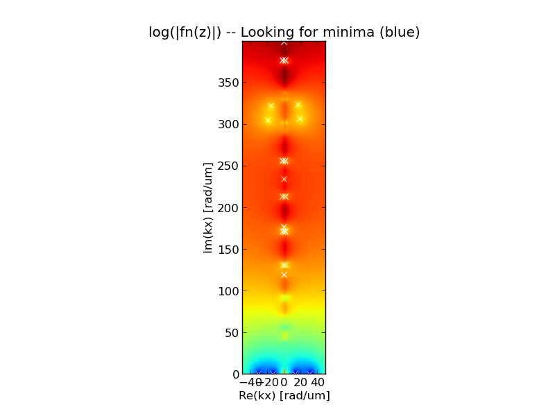
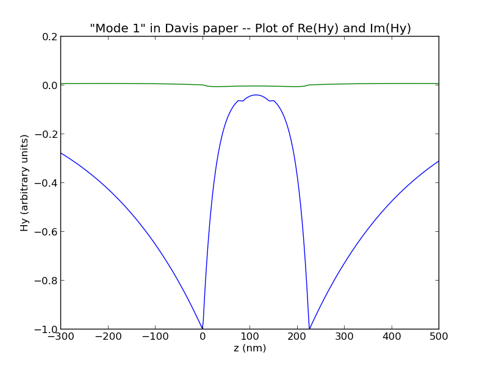
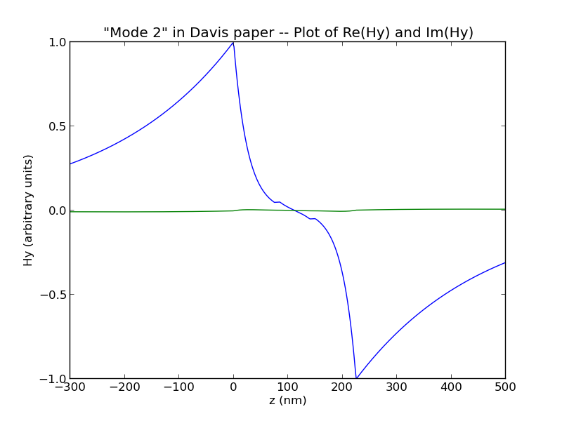
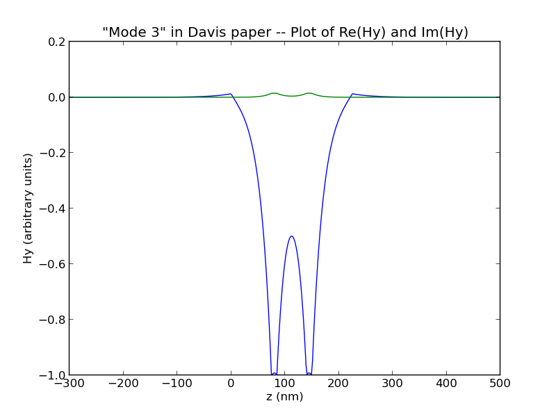
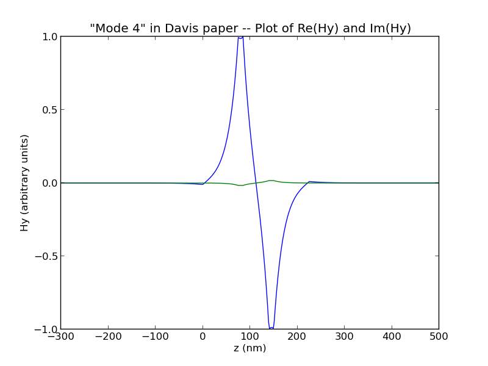
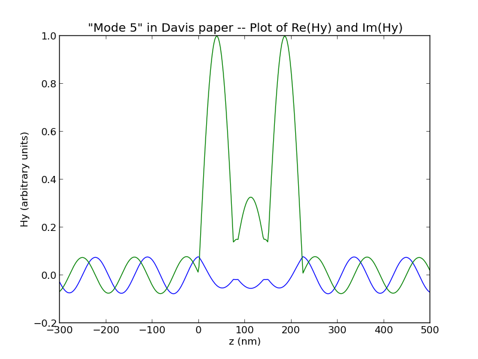
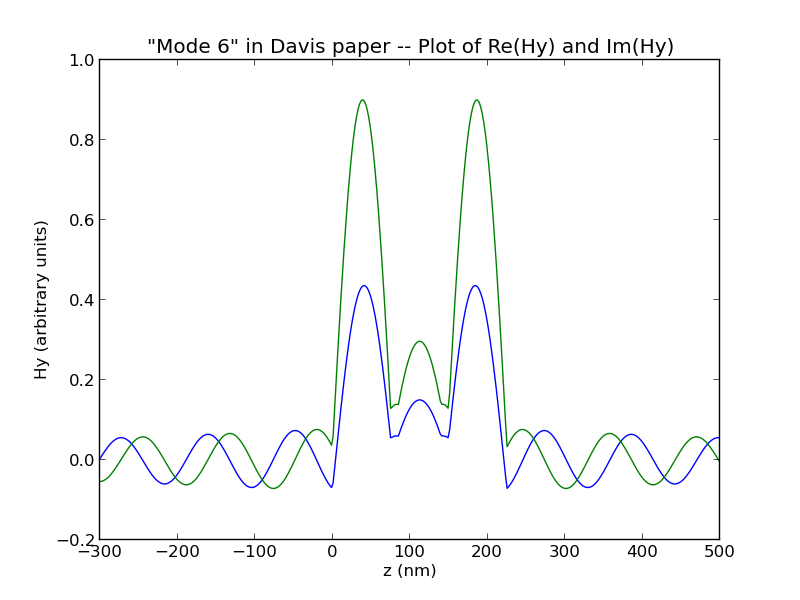

Download the software at http://pypi.python.org/pypi/multilayer_surface_plasmon
Questions, complaints, and suggestions: Use the GitHub project page https://github.com/sbyrnes321/multilayer_surface_plasmon, or email me -- steven.byrnes@gmail.com
Written by Steve Byrnes, 2013 (http://sjbyrnes.com)
Software is released under MIT license.
This is a program written in Python / NumPy that calculates surface-plasmon-polariton (SPP) and any other other tranverse-magnetic (TM) modes in planar structures of any number of layers, from two layers (like the interface between air and an infinitely-thick metal), to three layers (like a metal-insulator-metal or insulator-metal-insulator planar structure, or the TM modes of a low-index / high-index / low-index planar dielectric waveguide), to N layers.
Each layer is allowed to be anisotropic and/or magnetic. So each material has three parameters: In-plane permittivity (εx), an out-of-plane permittivity (εz), and in-plane permeability (μy) [where the wave travels in the x-direction and the layers are parallel to the x-y plane].
Please do not hesitate to email me with suggestions or corrections. If you use this program for a scientific publication, I would be grateful if you put a link to this page in a citation, and also tell me.
All the code is a single python module. (Written in Python 2.7, but as far as I can tell it should be compatible with Python 3 also. Please email me if you have tried.) It requires numpy and matplotlib. The module requires no setup or compilation, so you can just download it and use it. Or, if you prefer, run
pip install multilayer_surface_plasmon
to automatically download it into the default folder.
The functions are all described with docstrings, so if you read the source code you'll hopefully see what's going on. (There is no other documentation besides this page.)
The examples example1() and example2() are good places to start: They show most of the features you're likely to use.
The test test_davis() is worth running. It is supposed to reproduce the example in T.J. Davis, 2009, Surface plasmon modes in multi-layer thin-films, a seven-layer structure. When I analyzed the structure, my program found all the modes listed in the paper's table, with about 1-part-in-10,000 accuracy in kx for each, which is about as good as possible (given how many digits Davis wrote down).
Here is the plot, which is consistent with Fig. 1b in the paper:
and here are the modes, consistent with Fig. 2a in the paper:
     